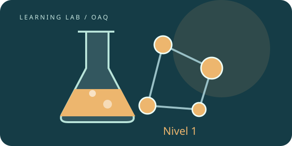

Leé y razoná
Revisá los requisitos, estudiá una explicación y resolvé el ejemplo antes de abrir la solución. Comprobá una idea a la vez.
OLIMPÍADA ARGENTINA DE QUÍMICA · PREPARACIÓN EN ESPAÑOL
Una ruta para estudiar a tu ritmo: explicaciones, ejemplos resueltos y experimentos virtuales que vos hacés funcionar.
Elegí tu nivel ↓ OBSERVAR → MODELAR → EXPLICAR
OBSERVAR → MODELAR → EXPLICARTU PUNTO DE PARTIDA
Comenzá por Nivel Inicial o usá la orientación de abajo para elegir qué estudiar primero. Nivel 1 incluye los contenidos del Inicial; Nivel 2 incluye los de ambos anteriores.
Esta orientación elige una ruta de estudio. No asigna un nivel oficial de inscripción.
Construí las herramientas de química: observar sistemas, representar sustancias y calcular cantidades.
Elegir una unidad →OAQ · 4 SERIES
Conectá estructura, cantidad de sustancia y energía para explicar y predecir reacciones.
Elegir una unidad →OAQ · 4 SERIES
Usá modelos cuantitativos de materia, termodinámica, cinética y equilibrio.
Elegir una unidad →CÓMO ESTUDIAR POR TU CUENTA
Revisá los requisitos, estudiá una explicación y resolvé el ejemplo antes de abrir la solución. Comprobá una idea a la vez.
Predecí, mové el material y operá los instrumentos sobre la mesa. Registrá medidas y compará con el modelo.
Recibí explicaciones de tus respuestas. El avance se guarda en este navegador; podés volver a las ideas que te cuestan.